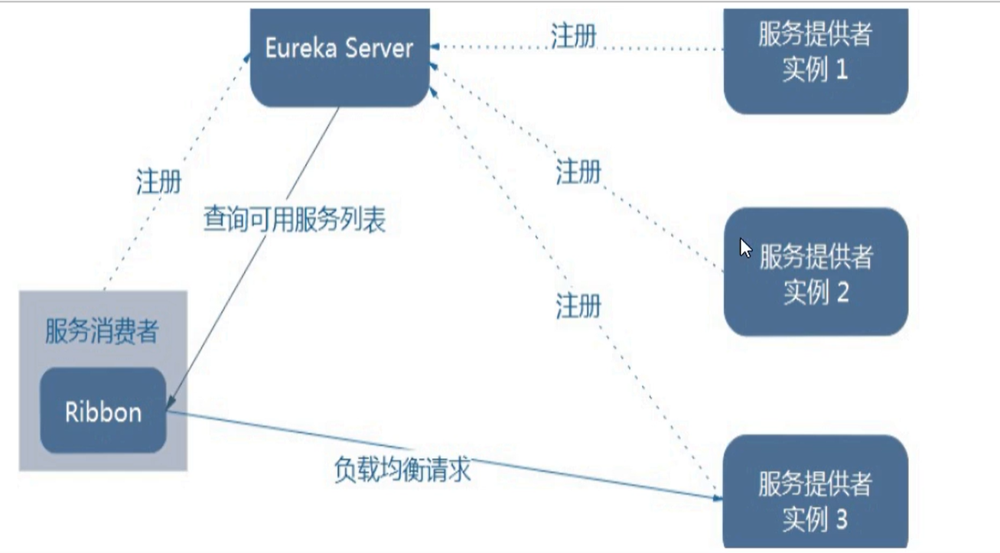
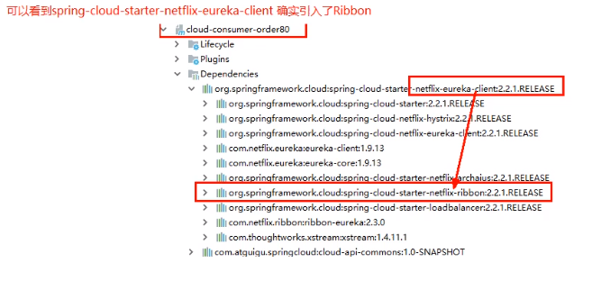
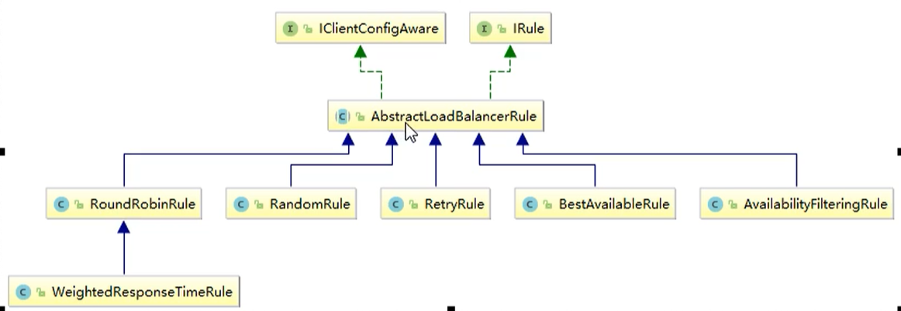
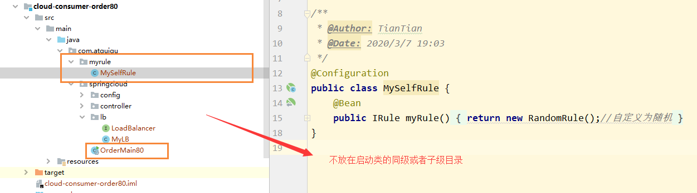
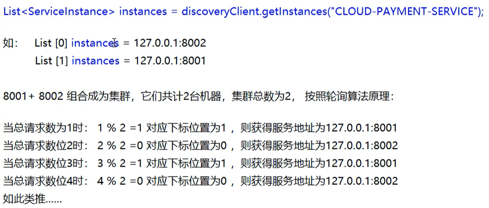

Ribbon实现负载均衡 Ribbon目前已经进入了维护模式，但是目前主流还是使用Ribbon
Spring Cloud想通过LoadBalancer用于替换Ribbon
概念 Spring Cloud Ribbon是基于Netflix Ribbon实现的一套客户端，负载均衡的工具
简单的说，Ribbon是NetFlix发布的开源项目，主要功能是提供客户端的软件负载均衡算法和服务调用。Ribbon客户端组件提供了一系列完善的配置项如连接超时，重试等。简单的说，就是在配置文件中列出Load Balancer（简称LB）后面所有的机器，Ribbon会自动的帮助你基于某种规则（如简单轮询，随机连接等）去连接这些机器。我们很容易使用Ribbon实现自定义的负载均衡算法。
LB负载均衡是什么 Load Balance，简单来说就是将用户的请求平摊的分配到多个服务上，从而达到系统的HA（高可用）。常见的负载均衡有软件Nginx，LVS，硬件F5等。
集中式LB：即在服务的消费方和提供方之间使用独立的LB设施（可以是硬件，如F5，也可以是软件，如Nginx），由该设施负责把访问请求通过某种策略转发至服务的提供方
进程内LB：将LB逻辑集成到消费方，消费方从服务注册中心获知有哪些地址可用，然后自己再从这些地址中选择出一个合适的服务器。Ribbon就属于进程内LB，它只是一个类库，集成于消费方进程，消费方通过它来获取到服务提供方的地址。
Ribbon本地负载均衡客户端 VS Nginx服务端负载均衡 Nginx是服务器负载均衡，客户端所有的请求都会交给nginx，然后由nginx实现转发请求，即负载均衡是由服务端实现的。
Ribbon本地负载均衡，在调用微服务接口的时候，会在注册中心上获取注册信息服务列表之后，缓存到JVM本地，从而在本地实现RPC远程调用的技术。
一句话就是：RIbbon = 负载均衡 + RestTemplate调用
Ribbon工作原理 Ribbon其实就是一个软负载均衡的客户端组件，它可以和其它所需请求的客户端结合使用，和Eureka结合只是其中的一个实例。

Ribbon在工作时分成两步
首先先选择EurekaServer，它优先选择在同一个区域内负载较少的Server
再根据用户的指定的策略，从Server取到服务注册列表中选择一个地址
其中Ribbon提供了多种策略：比如轮询，随机和根据响应时间加权
引入Ribbon 新版的Eureka已经默认引入Ribbon了，不需要额外引入
1 2 3 4 5 <!--Eureka客户端--> <dependency> <groupId>org.springframework.cloud</groupId> <artifactId>spring-cloud-starter-netflix-eureka-client</artifactId> </dependency>

RestTemplate 主要方法为：
reseTemplate.getForObject
reseTemplate.posttForObject
1 2 3 4 5 6 7 8 9 10 11 12 13 14 15 16 17 18 @GetMapping("/consumer/payment/create") public CommonResult<Payment> create(Payment payment) { return restTemplate.postForObject(PAYMENT_URL + "/payment/create", payment, CommonResult.class); } @GetMapping("/consumer/payment/get/{id}") public CommonResult<Payment> getPayment(@PathVariable("id") Long id) { return restTemplate.getForObject(PAYMENT_URL + "/payment/get/" + id, CommonResult.class); } @GetMapping("/consumer/payment/getForEntity/{id}") public CommonResult<Payment> getForEntity(@PathVariable("id") Long id) { ResponseEntity<CommonResult> entity = restTemplate.getForEntity(PAYMENT_URL + "/payment/get/" + id, CommonResult.class); if (entity.getStatusCode().is2xxSuccessful()){ return entity.getBody(); }else { return new CommonResult<>(444,"操作失败"); } }
Ribbon核心组件IRule Ribbon默认是使用轮询作为负载均衡算法
IRule根据特定算法从服务列表中选取一个要访问的服务，IRule是一个接口
1 2 3 4 5 6 7 public interface IRule { Server choose(Object var1); void setLoadBalancer(ILoadBalancer var1); ILoadBalancer getLoadBalancer(); }
然后对该接口，进行特定的实现

负载均衡算法 IRule的实现主要有以下七种
RoundRobinRule：轮询
RandomRule：随机
RetryRUle：先按照RoundRobinRule的策略获取服务，如果获取服务失败则在指定时间内会进行重试，获取可用服务
WeightedResponseTimeRule：对RoundRobinRule的扩展，响应速度越快的实例选择的权重越大，越容易被选择
BestAvailableRule：会先过滤掉由于多次访问故障而处于短路跳闸状态的服务，然后选择一个并发量最小的服务
AvailabilityFilteringRule：先过滤掉故障实例，在选择并发较小的实例
ZoneAvoidanceRule：默认规则，符合判断server所在区域的性能和server的可用性选择服务器
默认负载均衡算法替换 官网警告：自定义的配置类不能放在@ComponentScanner所扫描的当前包下以及子包下，否者我们自定义的这个配置类就会被所有的Ribbon客户端所共享，达不到特殊化定制的目的了

然后我们创建自定义Rule接口
1 2 3 4 5 6 7 @Configuration public class MySelfRule { @Bean public IRule myRule(){ return new RandomRule();//自定义为随机 } }
在主启动类中，添加@RibbonClient
1 2 3 4 5 6 7 8 @SpringBootApplication @EnableDiscoveryClient @RibbonClient(name="CLOUD-PAYMENT-SERVICE",configuration = MySelfRule.class) public class OrderMain80 { public static void main(String[] args) { SpringApplication.run(OrderMain80.class,args); } }
手写Ribbon负载均衡算法 原理 负载均衡算法：rest接口第几次请求数 % 服务器集群总数量 = 实际调用服务器位置下标，每次服务重启后rest接口计数从1开始。
1 2 3 4 5 6 7 8 假设现在有2台机器，同时 List = 2 instance（也就是服务注册列表中，有两台） 1 % 2 = 1 -> index = list.get(1) 2 % 2 = 0 -> index = list.get(0) 3 % 2 = 1 -> index = list.get(1) ....
这就是轮询的原理，即

源码 我们查看RandomRule的源码发现，其实内部就是利用的取余的技术，同时为了保证同步机制，还是使用了AtomicInteger原子整型类
1 2 3 4 5 6 7 8 9 10 11 12 13 14 15 16 17 18 19 20 21 22 23 24 25 26 27 28 29 30 31 32 33 34 35 36 37 38 39 40 41 42 43 44 45 46 47 48 49 50 51 52 public class RandomRule extends AbstractLoadBalancerRule { public RandomRule() { } @SuppressWarnings({"RCN_REDUNDANT_NULLCHECK_OF_NULL_VALUE"}) public Server choose(ILoadBalancer lb, Object key) { if (lb == null) { return null; } else { Server server = null; while(server == null) { if (Thread.interrupted()) { return null; } List<Server> upList = lb.getReachableServers(); List<Server> allList = lb.getAllServers(); int serverCount = allList.size(); if (serverCount == 0) { return null; } int index = this.chooseRandomInt(serverCount); server = (Server)upList.get(index); if (server == null) { Thread.yield(); } else { if (server.isAlive()) { return server; } server = null; Thread.yield(); } } return server; } } protected int chooseRandomInt(int serverCount) { return ThreadLocalRandom.current().nextInt(serverCount); } public Server choose(Object key) { return this.choose(this.getLoadBalancer(), key); } public void initWithNiwsConfig(IClientConfig clientConfig) { } }
手写负载均衡算法 原理 + JUC（CAS+自旋锁）
首先需要在RestTemplate的配置上将 @LoadBalanced注解删除
1 2 3 4 5 @Bean //@LoadBalanced 赋予RestTemplate负载均衡的能力 public RestTemplate getRestTemplate() { return new RestTemplate(); }
然后创建一个LoadBalanced接口
1 2 3 4 5 6 7 8 /** * 自定义负载均衡算法 * @Author: ylyang */ public interface LoadBalancer { // 获取注册的一个实例 ServiceInstance instances(List<ServiceInstance> serviceInstances); }
创建一个实现类，首先LoadBalanced接口
1 2 3 4 5 6 7 8 9 10 11 12 13 14 15 16 17 18 19 20 21 22 23 24 25 26 27 28 29 30 31 32 33 34 35 36 37 38 39 40 @Component public class MyLB implements LoadBalancer { // 创建原子整型类 private AtomicInteger atomicInteger = new AtomicInteger(0); /** * 获取Rest调用的次数 * @return */ public final int getAndIncrement(){ int current; int next; // 自旋锁 do{ // 获取当前值 current=this.atomicInteger.get(); /*2147483647:整型最大值*/ // 发生越界，从0开始计数 next= current >=2147483647 ? 0:current+1; // 比较并交换 }while (!this.atomicInteger.compareAndSet(current,next)); System.out.println("******第几次访问next"+next); return next; } //负载均衡算法：第几次请求%服务器总数量=实际访问。服务每次启动从1开始 @Override public ServiceInstance instances(List<ServiceInstance> serviceInstances) { // 获取当前计数 模 实例总数 int index= getAndIncrement() % serviceInstances.size(); // 返回选择的实例 return serviceInstances.get(index); } }
具体使用
步骤就是，首先我们通过discoveryClient获取所有的注册实例，然后调用该实现类，获取到调用的地址
1 2 3 4 5 6 7 8 9 10 11 12 13 14 15 16 17 /** * 在这边我为了以上程序的正常执行：把自定义接口注释掉，不用自定义负载均衡算法，若想再次启动 * 请操作一下步骤： * 1.注释掉@LoadBalanced（在config下面），放开下方注释，同时会导致上方不可用，因为找不到具体服务 */ @GetMapping(value = "/consumer/payment/lb") public String getPaymentLB(){ List<ServiceInstance> instances = discoveryClient.getInstances("CLOUD-PAYMENT-SERVICE"); if (instances ==null || instances.size()<=0){ return null; } //传入自己的 ServiceInstance serviceInstance = loadBalancer.instances(instances); URI uri = serviceInstance.getUri(); return restTemplate.getForObject(uri+"/payment/lb",String.class); }